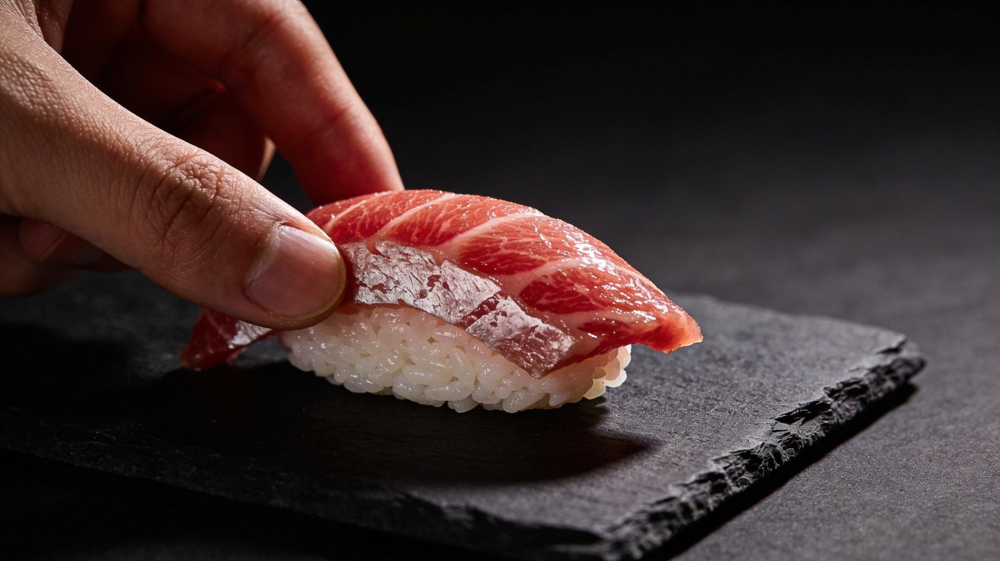
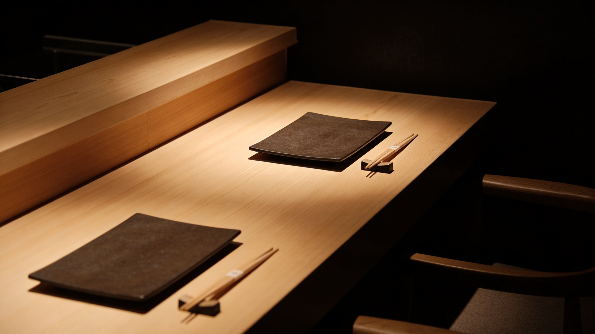
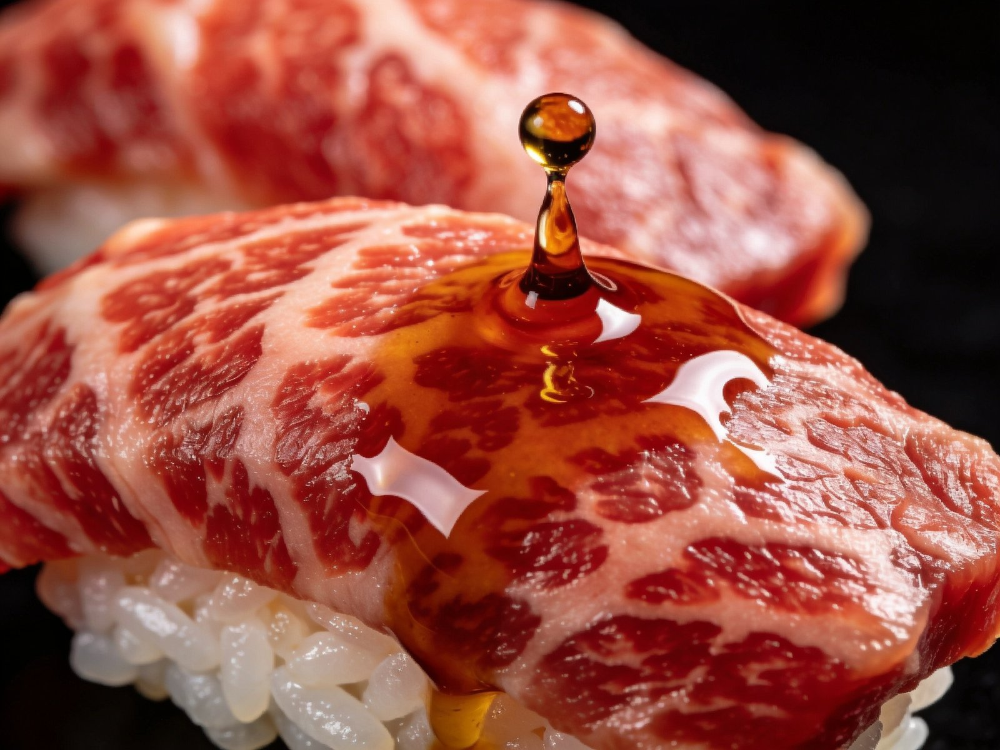
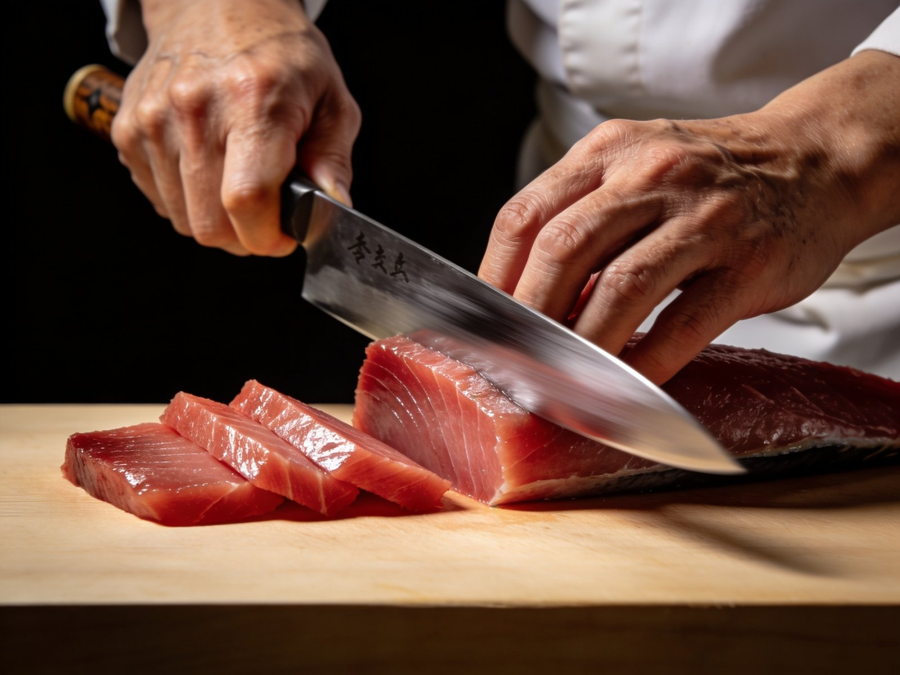

Sakizuke
Amuse-bouche du marché
Une bouchée pour ouvrir l'appétit — chrysanthème, dashi froid, daikon ciselé.

Casablanca · Omakase · Depuis 2021
Derrière une porte discrète d'El Cenador se cache un comptoir de huit places. Pas de carte. Pas de menu. Une seule règle : se laisser conduire.
ENSO — du japonais 円相, le cercle tracé d'un seul souffle — est un voyage en douze services où chaque pièce naît du marché du jour, du couteau du chef, et d'un silence devenu rare à Casablanca.


お任せ · Le menu
Le déroulé change chaque jour. Voici un témoignage récent — composé à partir de Honmaguro de Cadix, d'oursins de Dakhla et d'un wagyu A5 livré le matin même.
Une bouchée pour ouvrir l'appétit — chrysanthème, dashi froid, daikon ciselé.
Suimono à la palourde et au yuzu, infusé d'algue kombu de Hokkaido.
Trois découpes — Hirame en fine pellicule, Akami massé, oursin sur glace.
Unagi du Lac Hamana, sauce kabayaki tirée à l'eau de riz, sancho fraîchement broyé.
Crème vapeur d'œuf et dashi, ormeau braisé, perles de gingembre.
Première pièce. Maguro coupé droit, riz vinaigré au rouge d'akazu, wasabi râpé minute.
Le ventre intermédiaire — fondu en bouche, signature de la maison.
Pièce n°8. Le ventre gras, scellé à la flamme, finition au sel de Maldon.
Aburi au chalumeau de cèdre, drop de tamari vieilli douze mois, truffe noire.
Oursin de Dakhla sur riz tiède, ceinture de nori grillé.
Quinze couches d'œuf moelleux — la pâtisserie cachée du sushi-ya.
Mochi maison, sirop de prune, thé matcha cérémoniel d'Uji.
"Le silence entre deux pièces. C'est là que vit le sushi."— Chef Celso Szczerba

Itamae
板前 · Chef du comptoir
Vingt années passées entre Tokyo, São Paulo et Marrakech. Une obsession : la précision du geste. Au comptoir d'ENSO, le chef Szczerba travaille seul — pas d'équipe en cuisine, pas de service en salle pour la pièce qui sort de ses mains.
Chaque matin, il sélectionne le poisson au port de Casablanca avant l'aube. Chaque soir, il cuisine pour huit personnes. Pas une de plus.
— C.S.
Yoyaku · Réservation
Le comptoir n'accepte que huit invités par service. La réservation se fait par téléphone — c'est notre première conversation.
Réserver par téléphone +212 6 66 01 43 19 · 14h — 22h